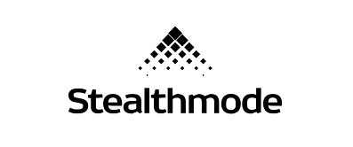

Work Experience

- Built Large Language Model (LLM) for extracting important tax information and stock holdings from long documents in Sequel Pro with Python and make API calls (AlphaVantage, Xignite) to get additional information about public assets, and building large-language model to make recommendations.
- - Created front-end interface through node.js, yarn, Docker for the web application to sync extracted information for end-users.
Data/ML Intern @ Warden
Jan 2024 - Apr 2024- Researched and initiated statistical models and visualisation frameworks on historical data for performance forecasting and time-series correlation to align the current metrics with the targets, expediting performance review and other decision making processes.
- Built ETL tools and automation algorithms using Python, SQL, Visual Basic to streamline the data extraction process from various sources, followed by extensive data wrangling and manipulation with SAS programs, optimising the data pipelines and improving efficiency by 200%, for data accuracy of the global metrics while querying and updating the data in a higher data warehouse.
- Established database schema with data dictionaries to develop reporting structure and align key metrics to fine-tune the data mart.
- Deployed Tableau dashboards end to end from data ingestion to user-centric, real-time visualisations for wealth and digital segments.
- Appreciated by Dept Heads for innovative product ideation and prototype for FRANKPreneurship Design Thinking Hackathon 2023.
Data Science Intern @ OCBC
May 2023 - Dec 2023- Analysed and visualised raw CSV files and APIs to create automated reports for clients including J&J Vision, Kellogg’s using Tableau and R.
- Assessed new product features cross-functionally with Product and Engineering team to identify and troubleshoot bugs then deploy custom metrics and platform updates based on clients’ reporting needs, using SQL and Java.
- Achieved 91% client renewal rate by daily data cleaning and preparing to review the ingestion of data via the NLP and AI based platform, conducting back-end and front-end data checks for accuracy and designing automated reports for key business functions.
- Resolved >100 issues raised by platform users via Intercom platform and email, about incorrect or untracked data to scale and democratise the data for users.